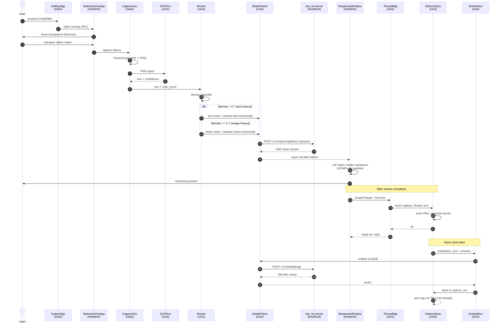

Overview
v1 was a one-night Electron build using GPT-4V via OpenAI cloud. v2 is a ground-up rebuild with a three-layer architecture (Main · Core · Renderer), MLX runtime bundled via PyInstaller, and SQLite + sqlite-vss for fully local searchable history.
Bootstrap
Day 1-2. Forge + Vite, three-layer skeleton, lint rules enforcing import boundaries, HMR working.
Capture pipeline (text route)
Day 3-7. Hotkey, marquee, ScreenCaptureKit, tesseract OCR, density classifier, MLX text model, response window with chat reply, markdown sanitization.
Vision route
Day 8-9. Qwen2-VL-7B variant, image upload, two-process MLX runtime, fallback when vision model not installed.
Storage and history
Day 10-13. SQLite + FTS5 + sqlite-vss, hybrid search ranking, history panel with virtual grid + IntersectionObserver thumbnails.
Threads and continuation
Day 14-16. Multi-turn chat, plain-click continues thread, option-click forks new thread on same image, auto-tags, generated titles.
First-run, Settings, packaging
Day 17-19. Welcome wizard, model download flow, Settings window (4 tabs), DMG sign + notarize, manual smoke checklist.
User Flow — Capture to Answer
Primary path. From hotkey press to final stored thread.
⌘⇧XDay-by-Day Timeline
Click a day for the file plan and key decisions.
Architecture Decisions
LLM Runtime — bundle Python via PyInstaller
Problem: mlx_lm.server is a Python program. Consumers cannot be expected to install Python 3.11+ and pip-install packages.
Solution: Bundle the runtime as resources/runtime/glint-mlx-server — a ~200 MB self-contained PyInstaller binary, signed and notarized.
Why: Native MLX speed on Apple Silicon (vs. ~25% slower with Ollama). One-time build complexity is hidden; user friction is forever.
Critical detail: PyInstaller binaries embed multiple Mach-O subbinaries — each needs codesign --deep. Failure mode is Gatekeeper blocking the spawn at first run; surfaced via toast.
Storage — sqlite + FTS5 + sqlite-vss
Problem: Need persistent metadata, keyword search, and semantic search in a single store. Avoid running additional daemons.
Solution: SQLite via better-sqlite3, FTS5 virtual tables for keyword, sqlite-vss extension for vector KNN. One file, one process.
Why: ~50 ms hybrid search at 10k captures is sufficient. LanceDB would add 40 MB and a separate process for marginal gain at our scale.
Critical detail: sqlite-vss arm64 dylib shipped in resources/vss/. Loaded at runtime via db.loadExtension(). Fallback to LanceDB documented if extension fails.
Three-layer architecture with import boundaries
Problem: v1 had a 642-line god-file main.ts mixing window management, IPC, OpenAI calls, and screenshot capture. Untestable and unmaintainable.
Solution: Split into Main (Electron orchestration), Core (pure TypeScript logic), Renderer (React UI). Custom ESLint rule blocks fetch/axios/electron imports inside core/**.
Why: Core can be unit-tested in plain Node without Electron stubs. Network bans in Core enforce the privacy promise at lint time.
Hybrid OCR router for vision quality
Problem: Local vision models (Qwen2-VL, LLaVA) misread small text. ~80% of real Glint captures are text-heavy (code, errors, articles).
Solution: Run tesseract.js OCR first (free, fast, lossless on text). Density classifier picks text-LLM path or vision-LLM path. Vision is only invoked when capture is image-dominant.
Why: Tesseract runs in <500 ms; text-LLM answers in 1-3 s. Compared to pure-vision-for-everything: 5x faster on the common case, lossless OCR beats vision OCR on dense text.
Markdown rendering with strict sanitization
Problem: LLM output rendered in a window is an XSS surface. v1 rendered raw text — safe but ugly.
Solution: Wire marked (already in v1 deps but unused) into ResponseWindow via lib/safeMarkdown.ts. Pipe output through DOMPurify with explicit tag allowlist.
Why: Adversarial markdown fixtures in tests (<script>, javascript: URLs, event handlers) ensure sanitizer holds.
Streaming UI with rAF batched re-render
Problem: Re-rendering markdown on every token at >120 tokens/sec drops frames.
Solution: useStream hook accumulates into a buffer; render is committed via requestAnimationFrame. Max one render per frame (~60 fps).
History UI — virtualized grid with lazy thumbnails
Problem: Rendering 10k full PNGs in a grid kills the renderer.
Solution: 256×256 webp thumbnails generated at save (cached in captures/thumbs/). VirtualGrid (react-window) keeps DOM nodes ~50. useThumbnails uses IntersectionObserver to decode only visible images. Max 30 concurrent decodes.
Why: Scroll stays at 60 fps even at 10k items. Full PNG only loaded when user opens a capture.
IPC channel allowlist
Problem: Renderer can call any main-process IPC channel by string name. Compromised renderer becomes a privilege escalation path.
Solution: preload/api.ts exposes a frozen object via contextBridge. Channel names are typed enum constants in shared/ipc-channels.ts. Unknown invocations throw at the preload layer.
Privacy — localhost-only model server, no telemetry
Problem: Default Electron app sends update-check probes, exception reports, etc. Privacy promise has to be enforced, not just claimed.
Solution: mlx_lm.server bound to --host 127.0.0.1 (negative test connects from 0.0.0.0, expects refusal). Auto-update omitted in v2.0. No analytics. Logger scrubs PII (OCR text, paths) before writing. ESLint rule blocks fetch in core/.
Data Model
SQLite schema. Single database file at ~/Library/Application Support/Glint/glint.db.
-- captures: one row per CmdShiftX event CREATE TABLE captures ( id TEXT PRIMARY KEY, -- uuid v7 created_at INTEGER NOT NULL, -- unix ms png_path TEXT NOT NULL, -- relative path ocr_text TEXT, -- tesseract output ocr_conf REAL, -- 0-100 text_density REAL, -- 0-1 route TEXT NOT NULL, -- 'text' | 'vision' tags TEXT, -- json array thread_id TEXT NOT NULL REFERENCES threads(id) ); -- threads: a capture plus its multi-turn conversation CREATE TABLE threads ( id TEXT PRIMARY KEY, created_at INTEGER NOT NULL, title TEXT, -- llm-generated pinned INTEGER DEFAULT 0 ); -- turns: every message in a thread CREATE TABLE turns ( id TEXT PRIMARY KEY, thread_id TEXT NOT NULL REFERENCES threads(id), role TEXT NOT NULL CHECK (role IN ('user', 'assistant')), content TEXT NOT NULL, created_at INTEGER NOT NULL, model TEXT ); -- FTS5 keyword search CREATE VIRTUAL TABLE captures_fts USING fts5( ocr_text, tags, content='captures', content_rowid='rowid' ); CREATE VIRTUAL TABLE turns_fts USING fts5( content, content='turns', content_rowid='rowid' ); -- sqlite-vss for semantic search (loaded as runtime extension) CREATE VIRTUAL TABLE capture_vec USING vss0( embedding(384) -- BGE-small dim ); -- Indices CREATE INDEX idx_captures_created ON captures(created_at DESC); CREATE INDEX idx_captures_thread ON captures(thread_id); CREATE INDEX idx_turns_thread ON turns(thread_id, created_at);
Filesystem layout
~/Library/Application Support/Glint/ ├── glint.db # SQLite (metadata, FTS5, vectors) ├── captures/ │ ├── <uuid>.png # original full-res PNG │ └── thumbs/ │ └── <uuid>.webp # 256x256 thumbnail for grid ├── models/ │ ├── qwen2.5-7b-mlx/ │ ├── qwen2-vl-7b-mlx/ │ └── bge-small-en-v1.5-mlx/ └── logs/ └── glint-<date>.log # pino, PII-scrubbed, 7-day retention
Access rules (privacy)
# Encrypted at rest by macOS FileVault (status surfaced in Settings → Storage) # PII never logged: ocr_text, png_path, tags scrubbed by logger # Localhost-only model server: --host 127.0.0.1, never reachable from LAN # IPC allowlist: renderer can only invoke channels in shared/ipc-channels.ts # Network ban in core/: ESLint rule blocks fetch/axios/electron imports
What We Reuse from v1
Verified by reading actual v1 source. Patterns are referenced, not copy-pasted — most are rewritten cleaner in v2.
desktopCapturer.getSources() call shape and screen.getAllDisplays() iteration. ScreenshotResult/ScreenshotError type shapes.v1-final for reference.
Risks & Mitigations
| Risk | Mitigation | Fallback |
|---|---|---|
| MLX runtime instability (Apple ML stack churn) | Pin MLX version in requirements.txt, snapshot working model files, lock to known-good commit hash | Ship "rollback runtime" toggle in Settings → Models |
| Local vision quality below user expectations | Set expectations in onboarding ("works best on text"). OCR-route handles 80% of cases at high quality | v2.1 opt-in cloud fallback (user-supplied API key, gated) |
| sqlite-vss arm64 binary unavailable | Verify availability before P3 starts. Adapter pattern in store.ts | Switch to LanceDB (40 MB extra, well-maintained binaries) |
| Hugging Face download slow / blocked | Resumable HTTP with checksum. Progress UI | Document mirror URLs in wizard. Manual download into models/ directory |
| Screen Recording perm UX confusing | Polished modal with screenshot of System Settings. Auto-open Settings deep-link | "How to grant" link in error toast with video walkthrough |
| Qwen2.5 context window overflow on long threads | Auto-summarize older turns in context.ts when token count approaches limit | Hard-cap at 30 turns, warn user; offer "fork thread" button |
| First-run download interrupted | Resumable HTTP + checksum verification on resume | "Continue download" prompt on next launch |
| Code-signing cert expires | Renew before P5. CI checks expiry > 90 days | Ship unsigned with documented Gatekeeper override |
| M1 8GB Mac OOMs on vision model | Detect total RAM at install. Gate vision behind 16GB+. Warn otherwise | Offer Qwen2-VL-2B (smaller, lower quality) as fallback option |
| PyInstaller binary fails Gatekeeper deep-sign | codesign --deep --strict on every Mach-O subbinary. Verified in build pipeline | v2.0.1 fix release; ship initial v2.0 unsigned with prominent warning |
| Tesseract.js worker crashes on weird captures | try/catch + fall through to vision route automatically | Toast: "OCR failed, using vision". User can retry capture |
Verification Checklist
Manual smoke (pre-release)
Automated (CI gates)
Diagrams
Architecture, capture-to-answer sequence, and first-run state machine. Generated via Mermaid; SVGs live alongside this HTML in diagrams/glint-v2/.
Component architecture

Capture-to-answer data flow

First-run wizard state machine
